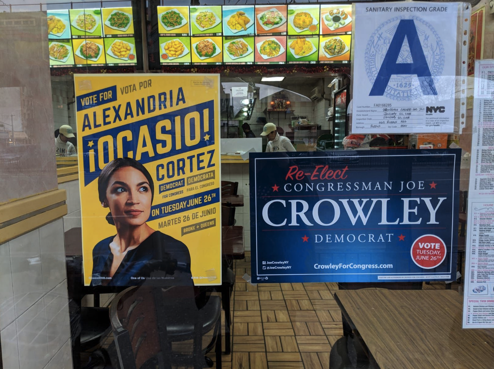

AOC的选战
1. 热情：志愿者团队、地毯式拉票策略
2. 创意：社交媒体运营（爆火视频， 左翼自媒体宣传互动）、短信、宣传设计
在美国的政治中，存在着一个被称作“建制派”（Establishment）的政治精英阶层。他们身居高位，主张维护现有体制和权力结构。约瑟夫克劳利（Joe Crowley）就是这样一位建制派的代表。56岁的他已经在纽约第十四选区连任了10届众议员。到2018年时，他已经是众议院超过两百位民主党议员中排名第四的领袖人物，克劳利甚至已经开始谋求起了议长的位置，成为了南希佩洛西的接班人选。自从2004年开始，他在民主党初选中就没有对手，直到2018年AOC的出现。
如果你对美国近两年的政治有所了解的话，那么你一定听说过Alexandria Ocasio-Cortez（AOC）的大名。在2018年的民主党初选中，这位寂寂无名的28岁拉丁裔女性横空出世，一举击败了建制派精英约瑟夫克劳利，成为了众议员。本系列文章将以AOC和克劳利的这场选举为例，介绍建制派如克劳利如何长期保持自身权力，以及AOC这样的左翼反建制派如何拿下这场惊人且不易的胜利。
“定义建制派 Establishment”
在美国的政治中，存在着一个被称作“建制派”（Establishment）的政治精英阶层。他们身居高位，主张维护现有体制和权力结构。约瑟夫克劳利（Joe Crowley）就是这样一位建制派的代表。56岁的他已经在纽约第十四选区连任了10届众议员。到2018年时，他已经是众议院超过两百位民主党议员中排名第四的领袖人物，克劳利甚至已经开始谋求起了议长的位置，成为了南希佩洛西的接班人选。自从2004年开始，他在民主党初选中就没有对手，直到2018年AOC的出现。
如果你对美国近两年的政治有所了解的话，那么你一定听说过Alexandria Ocasio-Cortez（AOC）的大名。在2018年的民主党初选中，这位寂寂无名的28岁拉丁裔女性横空出世，一举击败了建制派精英约瑟夫克劳利，成为了众议员。本系列文章将以AOC和克劳利的这场选举为例，介绍建制派如克劳利如何长期保持自身权力，以及AOC这样的左翼反建制派如何拿下这场惊人且不易的胜利。
2018年轰动一时的纽约第十四选区民主党初选，政治新人AOC（右）爆冷击败老牌政客克劳利（左）
第三大优势：热情和创意
作为体制外的候选人，AOC在选举中天然具有劣势。在选区里，克劳利当了20年的民主党众议员，而AOC只是一个无人知晓的28岁年轻人。为克劳利背书的政治人物和组织从州长市长参议员众议员，到市议员，民主党在皇后区的工作人员，主流的民间议题组织（工会，堕胎权，枪支管控），应有尽有，他所拥有的的政治支持远超AOC。论宣传，克劳利募集到的竞选资金超过3百万美元，是AOC的11倍，而他花费了其中的150万，以此聘请专业的竞选团队和发布大量的广告，这一支出是AOC竞选开销的18倍。 当然，AOC也不是毫无优势。前两篇文章中，笔者介绍了AOC受欢迎的左翼政策和政治形象（与之对应的是克劳利为代表的的建制派不受欢迎的中庸政策和政治形象）。此外，AOC和其团队还拥有非凡的竞选能力，凭借着年轻人的拼劲和创意淘汰了政治老人克劳利。
老政客克劳利（左）和政治新人AOC（右），截然不同的年龄、背景和经历
努力与理想：AOC团队的“地毯式”拉票战术
AOC获得的背书主要来自于左翼激进组织，以及一两位进步派政客，论含金量比克劳利的背书阵容差之甚远。但是，这些进步派的支持可不是光说不练的假把式。皇后区和布鲁克林区的年轻人，占领华尔街运动和桑德斯2016竞选团队的“老兵”，来自黑人的命也是命(Black Live Matters)、不可分割（Indivisible)、正义民主党人（Justice Democrats）、全新国会（Brand New Congress）、布鲁克林进步派（Bronx Progressives）以及美国社会民主党人（DSA）的活动家，当地基督教，犹太教，穆斯林，印度教的教徒，都为A0C的竞选出了一份力。 她的竞选团队是年轻的，是多元的，不光是AOC本人是一个拉丁裔年轻女性，更是因为她所主张的经济平等和社会正义政策吸引到了志同道合的青年活动家。年轻人和少数族裔通常被认为政治参与度低，但当他们被特朗普的政策（美墨边界上对待非法移民的暴力执法和非法关押）所激怒又对民主党建制派政客如克劳利的无所作为而感到失望时 ，他们自然会被一位真正的进步派人民代表的竞选期望所打动。各个族裔的志愿者涌入AOC的竞选团队，一腔热血地为她的选战无偿服务。（顺带还解决了AOC资金缺乏的问题，整场初选AOC只用了8万3千美元，只有克劳利的十八分之一）。
AOC在推特上感谢孟加拉裔穆斯林志愿者和选民对她的支持
AOC本人和她的支持者们在选举中非常努力，试图用人力来弥补自身在声望，人脉和资金上的劣势。为了进入民主党的初选，候选人们需要收集数千个当地民众的签字，AOC聚起志愿者们，带着他们在纽约街头和陌生人搭讪，试图获取选民的信任和签名。米利安（Miriam）是一位美国民主社会党人（Democratic Socialist of America），也是一位AOC团队的志愿者，她描述自己在四五月的周末到纽约的公园中收集签名的经历： 她的诀窍是寻找那些“野餐完自己收垃圾”的，重视环保的千禧一代（Millennials），跟他们谈AOC的左翼政策来收集签名是效果拔群。收集签名的工作很辛苦，往往数个小时下来只能收集不到20个的签名。到了截止日期，全凭政治热情的志愿者们硬是为AOC收集到了5000多个签名，而拿薪水的专业员工顶着议员克劳利的大名也只收集到了相同数量。
收集签名只是第一关，AOC和她的团队需要吸引到足够数量的选民才能确保胜利。最近几十年来，党内初选的策略专注于“主要选民”（Prime Voter），即过去参加多次初选的选民。这一策略很高效，候选人们集中资源吸引这些投票可能性很高的主要选民，毕竟党内初选的投票人数往往不多（不到十万人），把主要选民发动起来就能决定胜负。
然而，AOC团队却不走寻常路--她们定下了一个野心勃勃的计划，试图和所有潜在选民（注册民主党人）沟通。AOC的策略并不高效，却更加适合纽约第十四选区。克劳利在该选区多年没有初选对手，导致没有多少主要选民。从选民的阶级上分析，主要选民长期参加投票，拥有公民意识，其中中产及以上的比例会比较高，而AOC作为政治新人，她缺失的资历和激进的政策 对于这些主要选民的吸引力不见得高。纽约第十四选区有着大量年轻人，少数族裔，工薪家庭，AOC希望能吸引到这些投票率低的选民，用额外的票数来战胜克劳利。为此，她需要“地毯式”地吸引潜在选民，不管是主要选民还是政治参与度少的“次要”选民。
凭着热情和毅力，AOC的志愿者们出发去敲遍选民的房门，打遍选民的电话。和收集签名一样，用纯人力吸引潜在选民工程浩大。AOC本人在选举结束后晒出自己磨出洞的鞋子，来证明选举的艰辛。志愿者米利安（Miriam）谈起最初的困难：据她说，别提和选民沟通，在选举初期，志愿者都不能让对AOC一无所知的当地居民打开房门。 随着AOC的名声越来越响，志愿者的沟通技巧愈发成熟，“地毯式”拉票的效率也是越来越高。在有80所房子的居民地，米利安两个小时内可以和10到20个潜在选民沟通，拿到5个承诺，如果运气好，她可以拉到10张票。凭借着成百上千个米利安，截止至初选日，在资金远少于克劳利团队的情况下，AOC的竞选团队共计敲了超过12万扇门，打了超过17万通电话，发送了超过17万5千条短信。选举的最后四天，AOC的团队和选民进行了超过2万次的交流。总计超过40万次的拉票活动是一个极其夸张的数字，证明了AOC和她团队的努力。最后，AOC在初选中拿到了16898票，远超过克劳利的12880票，“地毯式”拉票策略尽管耗时耗力，但确确实实地取得了回报。
AOC在推特上展示竞选时磨破的鞋子，将胜选归因于自己和团队的努力
和AOC团队相比，克劳利的选战就显得懈怠了。他既没有能力，也没有设想招募大量志愿者挨家挨户拉票。没有能力是指以他为代表的建制派在政策主场和政治形象上都不受欢迎，除了实习生和带薪水的竞选助理，没人，尤其是没有年轻人会愿意为克劳利出力。没有设想是因为克劳利不理解AOC所代表的进步派运动，不相信AOC的团队能够仅凭热情和毅力完成地毯式拉票的壮举，20年的众议员生涯，最近10年连个初选对手都没有的克劳利不了解他选区的民众，不了解他们对变革的渴望，还是中规中矩地将自己所拥有的竞选资金投入购买电视广告。150万美元花完，广告和专业团队却只带来了12880票，效果可见一斑。
纽约时报称AOC对克劳利的胜利是“2018年美国政治中最大的爆冷”，那么克劳利是不是自以为胜券在握，没有全力以赴才被AOC逆袭了呢？从克劳利的募捐强度和背书数量来看，他对AOC的挑战其实是相当的重视。落选之后，克劳利团队在接受媒体采访时也宣称己方已经倾尽全力，邮件，电话，敲门克劳利团队也都没有拉下。
民主党初选的辩论或许能让我们对克劳利的竞选策略有更深的认识。民主党初选有两场辩论，第一场克劳利直接跳过，而第二场他则是派了一位代理人。连在选举中保持中立的纽约时报的编委会都批评他不参加辩论的行为是对选民的不尊重，甚至是对民主程序的不尊重。 奇怪的是，在AOC和克劳利的代理人辩论时，克劳利去参加了皇后区的一场政治集会。这一奇怪的行为可以解释为克劳利托大，瞧不上AOC，也可以解释为惧怕出丑，不愿意和AOC进行辩论。当然不管理由如何，辩论都不参加的克劳利肯定是不如AOC竞选得那么积极努力。
AOC和克劳利的代理人辩论，克劳利本人找借口不参加
说起来陈词滥调，但是AOC的胜利确实证明了努力是有用的。AOC和她的团队“踏破铁鞋”的坚持最后使她爆冷战胜那几乎不可战胜的，高高在上的建制派克劳利。 美国历史上也不乏努力的黑马：奥巴马在竞选中和AOC一样磨破了鞋子；如果特朗普不进行上百场次，最后几天一天五场的演讲，他很可能无法战胜民调领先的希拉里。
奥巴马著名的“磨破鞋子”照片
不论近年的例子，早在1948的总统选举中，民主党的杜鲁门就证明了在政治选举中努力往往是成功逆袭的根本。1948年总统选举，共和党候选人杜威民调遥遥领先，（当时连蒋委员长也认为杜威胜券在握，押宝在杜威身上）以至于杜威稳坐钓鱼台，闭门不出以避免出丑的可能。民主党的杜鲁门为了胜利，坐着火车到全美各地演讲。 从七月到十月，杜鲁门马不停蹄，几乎走遍全美，在火车沿途的各个小镇发表演讲，攻击共和党人的不作为，承诺延续罗斯福的新政。通过不断的和选民交流，而他的“乡间小镇选战”（Whistle-Stop Campaign）使他最后逆袭杜威，成功连任。
杜鲁门高举大选次日芝加哥论坛报，该报纸确信杜威会战胜杜鲁门而提前印刷
年轻人的领域：互联网，社交媒体和短信
前文说到，克劳利的团队经验丰富，资金充足，克劳利作为皇后区民主党主席，在党内根深蒂固，他拿到的民主党内资源远超AOC（民主党的宣传渠道，地方组织配合，政客背书大都被克劳利包揽）。AOC作为体制外的挑战者，靠的是她热情的志愿者团队和“地毯式”的选战。
当然，努力和热情并不是AOC竞选团队的唯一长处。新时代的年轻人了解他们的时代，了解当下的社交媒体和宣传方式。和克劳利手下的“专家顾问”不同,包括AOC本人在内的AOC团队不需要刻意去学习社交媒体宣传，这是年轻人与生俱来的优势。
21世纪是互联网的世纪，社交媒体的影响力相信所有读者都深有体会。政客们早就不断尝试用社交媒体作为政治宣传工具。2008年大选时，奥巴马的竞选团队就大量购买社交媒体上的广告，并设计针对网民的广告内容，创建选民社区等等 ；2016年特朗普更近一步，用推特直接和选民零距离交流，高效地聚拢了一大批忠诚的追随者，推特每日发言鼓舞粉丝，脸书为他的竞选提供了大量的募捐来源 。
对于AOC这位没有知名度的政治新人，社交媒体首先为她提供了爆红的机会。在参选前，AOC的名气之小，小到对纽约政治深入报道的纽约时报都没有她的档案。默默无闻的她在五月三十号发布的一则短视频“改变的勇气”（the Courage to Change） ，第一天就收获了三十万次观看。 凭借着该视频以及之后的一系列互联网宣传，AOC走出桑德斯2016竞选团队和美国社会民主党的小圈子，走向了大众。上文中提到的志愿者们不少都是被她在社交媒体上的视频所打动，从纽约市各处乃至市外赶来相助。
AOC的爆火视频，Youtube一平台上就有百万播放
AOC在社交媒体上的名气还来自她和左翼自媒体的互动。AOC所代表的进步派/激进左派处于美国主流政治的边缘，对以克劳利为代表的的建制派政治精英发起挑战。广义上的建制派不仅包括政客，也包括主流媒体（Mainstream Media），电视台如CNN，MSNBC和福克斯FOX，报纸如纽约时报和华盛顿邮报。这些主流媒体一是眼界窄，看不出小小的一场众议员选举中内含的进步派和建制派之争，二是心界高，同建制派政客一样不重视甚至不关注正在崛起的激进左翼理念。在AOC的胜利后，他们才开始关注这匹黑马和她所代表的变革，在他们的报道，时报(The Time)和全国公共广播电台（NPR）等媒体 也承认了他们的忽视。
相较于后知后觉的主流媒体，互联网上的左翼自媒体们一直与AOC的选战站在一起。他们追踪报道了AOC的竞选，并给予AOC急需的曝光。以世俗谈话（Secular Talk，2018年Youtube订阅超过五十万的进步派自媒体）的凯尔·库林斯基（Kyle Kulinski ）为例，他在线下是正义民主党人（Justice Democrats）的创建人之一，AOC作为成员竞选获得过该组织的支持。初选结束前的两个月内，凯尔就至少报道了五次AOC的选战，指出克劳利的腐败，并呼吁其观众支持AOC的竞选。
同时，AOC本人也相当重视互联网上的盟友，多次参加线上的采访，与之互动。从Youtube四百万订阅的青年土耳其人（Young Turks，美国进步派自媒体）到十万订阅的人文主义者报道（Humanist Report）到受众更少的推特频道，她并不挑剔自媒体频道影响力大小，积极争取所有机会。
AOC接受“截获报”记者格伦·格林沃德的采访
除了广泛互动，AOC对左翼自媒体的重视还体现在她对采访的充足准备。在人文主义者报道上，主持人和AOC探讨了全民医保在美国的适用性 ，吉米多尔秀（The Jimmy Dore Show，在Youtube订阅超过五十万）的主持人吉米多尔更多地关注建制派政客克劳利的腐败 ，而截获报（The Intercepted，偏左翼线上媒体，以报道斯诺登文件闻名）的格伦·格林沃德（Glenn Greenwald，传奇记者，揭露了美国的棱镜计划和巴西的洗车行动丑闻）则询问了AOC对美国身份政治的态度 。面对各式话题，AOC能够做到对答如流，展现出了极高的政治素养。大家有兴趣可以观看下这些采访，除了看看AOC的表现，还可以了解到美国进步派的日常话题。
尽管在大众中影响力不如主流媒体，但是自媒体们专注于自己热衷的议题，拥有着忠诚的粉丝，所以当他们支持和自己政见相投的政客，他们的影响力更加有效，也更加直接。设想，一个自媒体的粉丝平日里听着进步派的政策主张，感叹国会里除了桑德斯几乎没有能代表自己的政客，今天突然从主播那里听到了AOC的轶事，哪能不心潮澎湃地支持这位理想中的候选人，AOC选战中依赖的大量小额度募捐和志愿者就有相当数量来自于她在左翼自媒体上的亮相。
AOC胜选后发布推特，感谢Young Turks等自媒体对她选战的重视和帮助
不少人了解AOC都是因为她的推特，她目前是国会议员中推特粉丝最多者，拥有超过一千二百万，是进步派当之无愧的意见领袖。在2018年，AOC的推特还没有一飞冲天，她的粉丝在四十万左右，如今动辄数万点赞的推文基本超不过千。 当然，AOC的社交媒体运营不论何时都是远超克劳利。截止到初选日，克劳利也只有三万推特关注。而发布其上的竞选视频的播放量也十分惨淡--他的全部视频总计不到十万播放量。
互联网外，短信的影响力也不容忽视。中国人当下惯用QQ和微信，短信使用率越来越低；美国人却不同，短信依旧是他们交流的重要工具。（疫情期间，笔者和美国同学打算搞个群聊，whatsapp，telegram，groupme选来选去，最后还是建立一个短信群。）除了面对面和电话拉票，AOC团队的“地毯式”拉票也充分利用短信在其他社会活动组织搞串联。在2018年选举中，各路竞选团队共使用短信宣传超过上亿次，而AOC团队正是其中佼佼者。 要知道，1条短信被点开并读取的概率在70%到90%之间，信息传达效率相当之高，远超电子邮件（容易被当做垃圾邮件）和电话（容易被当做诈骗电话）。同时，短信群代表着线下的关系网，一个发送者很容易传播给大量相关的潜在选民，布鲁克林的选民发给同样在布鲁克林的全家，环境保护协会的成员发给其他会员，一传十，十传百。AOC竞选团队的宣传总监（communication director） 科尔宾（Corbin Trent）就将投票日年轻人的大量出现归功于短信宣传。
年轻人的创意：视频与艺术海报
年轻人的创意不局限于开辟新的宣传渠道，还体现在政治宣传的制作上。制作视频“改变的勇气”（the Courage to Change）时，AOC自己写稿，志愿者帮助拍摄，家人和她常去的便利小店入镜。视频展示了AOC的人生历程，有她的童年照片和日常生活。包括坐公共交通前换鞋这一纽约居民的日常在内的大量细节突显真实。文案则讲述了AOC对建制派的挑战和对进步政策的主张，质问克劳利20年的代表为纽约第14选区带来了什么，也质问在日新月异的纽约为何工薪家庭生活愈发艰难。创意，而非传统政治智慧和策略，是该视频的制作理念。“整个视频没有一位顾问参与”，AOC在推特上夸耀道。 确实，不需要专业拍摄团队和写手，也不需要政治顾问，AOC的草头班子用极小的成本就拍出爆红的视频。
“改变的勇气”片段是在AOC常去的便利小店内拍摄的，Bodega是纽约独有的一类便利小店，
售卖食物，杂货，部分卖酒，以养猫，亲民，无处不在而闻名
视频外，AOC的宣传海报也独具创意。她所雇佣的设计公司“串联”（Tandem）是家年轻的小公司，创建于2015年，至今不到十人。“串联”的设计师之一斯考特（Scott Starrett）是AOC的朋友，不到30岁；另一位设计师玛利亚（Maria Arenas）是一位24岁少数族裔女性，从未设计过政治传单。她们放弃了政治海报传统的红蓝白配色，大胆地使用紫色黄色等明快颜色来突出AOC的革命精神（Revolutionary Spirit），以此吸引选区内大量的千禧一代。玛利亚还为AOC的海报添加了诸多细节，融入了包括女权，劳工运动，民粹主义等历史典故，具体分析可以参考VOX和华盛顿邮报的两篇评论 。
在文字标识上，设计者则加入了大量拉丁裔特色（AOC本人是是拉丁裔，参选的纽约十四选区有超过40%的拉丁裔），如代表波多黎各的五角星和西班牙语的颠倒感叹号。谨慎的政客不会选择如此打破常规的设计，而AOC进步派和政治新人的身份反而恰到好处。事后证明，特立独行的海报大获成功，华盛顿邮报甚至认为AOC竞选的设计理念是可以和AOC爆冷获胜相提并论的美国重大政治事件 ,可见创意的重要性和影响力。
AOC竞选海报靓丽的配色
一家快餐店外，AOC的克劳利的竞选海报并列
如图所示，和AOC的海报相比，克劳利的就显得无趣和单调许多。传统的蓝（民主党代表色）白红配色，标准的字体，纯英文，无图，放到五十年前都毫无违和感，体现了克劳利民主党保守派/美国政坛中间派的立场和老政客的身段。
总结
讨论草根进步派AOC对建制派老政客克劳利的胜利，她政策和政治形象上受欢迎固然值得重视 ，没有成功竞选战术和战略也是空谈。凭借着对进步政策的信念，AOC团队完成了地毯式拉票的壮举，用努力来弥补她名气、人脉、金钱上的劣势。凭借着社交媒体，短信以及打破常规的宣传设计，AOC得以声名鹊起，潜在支持者则蜂拥而至，用年轻人的创意战胜了传统政治运作。反观克劳利，他和他投入重金聘请的专业团队尽显昏聩无能，一是战略失误，没有预料到AOC团队地毯式拉票的毅力，二是“科技”落伍，没有跟上时代的步伐，在互联网和宣传设计上毫无建树。纽约时报分析克劳利败选时提到，其团队中一位匿名成员抱怨他的选战像是在1998年而非2018年。 的确，克劳利的团队就像鸦片战争时的清军，或是祖鲁战争时的非洲战士，迷惑于英军的意图，也不知道英军所拥有的坚船利炮和机关枪，人多势众又如何，不可避免地迎来了失败。AOC的胜利体现了美国政治的活力，外来者虽然会遭遇到克劳利这般强劲的守门人，但是努力和创意依旧能带来一线希望。
系列文章总结
尽管以克劳利为代表的建制派政客拥有巨大的优势，但是AOC的逆袭也证明了美国民主并不是一个完全封闭的体系。作为体制外的一介草根，AOC成功击穿了民主党设下的屏障；克劳利数十个重要背书昭示出建制派政客的官官相护，十倍于AOC的竞选资金象征着金钱对美国政治的控制，但这些优势都不能阻挡AOC的崛起。AOC的胜利标志着进步政策从民间走进了国会，暴露出民众对政治精英的不满和对真正人民代表的渴望，也证实了“有志者，事竟成”的朴素道理。虽然桑德斯在2016年输给希拉里，没能成为民主党总统候选人，但是桑德斯的竞选却激活了美国21世纪的进步主义运动：2018年，桑德斯竞选团队中一位不起眼的成员AOC成功了，这场胜利不是一个职业政客战胜另一个职业政客的无聊故事，正是这场进步主义运动的延续。正如AOC自己在获胜演讲中说的：我无法用语言形容我对每位组织者，每位小额捐赠者，每位志愿者，梦想家和他们父母的感谢，他们的帮助使这场运动成功发生了。是的，这是场运动，不是我的竞选而是一场运动，一场在美国追求社会，经济，种族公平公正的运动（Words cannot express my gratitude to every organizer, every small dollar donor, every working parent and Dreamer who helped make this movement happen. And that's exactly what this is – not a campaign or an Election Day but a movement, a larger movement for social, economic and racial justice in the United States of America.） 。
AOC并不是普通政客，她是左翼运动的代表
当然，建制派克劳利虽然败了，克劳利所代表的一切依旧是民主党的主流，而AOC所代表的进步派离掌握权力还有相当远的距离。到2021年的今天，众议员AOC在国会三年了，也算是体制内的熟人了，她和进步派盟友的分分合合，与民主党保守派的妥协与斗争，更多的故事还未被讲述。
民主党国会的一号人物，建制派中的建制派，议长佩洛西（左1）的政策保守，她和进步派AOC的冲突又会如何？
后记
AOCvs克劳利系列文章（共六篇）终于完结了。我自己都很难想象最初只是想用AOC作为一个例子介绍民粹主义在美国的历史。如今六篇文章后，AOC和克劳利的斗争分析的差不多了，笔者总是想讲具体的强迫症也满足了。
在2020大选后，民主党掌权，进步派的势力愈发强大，但其却暴露出了软弱的致命缺点。本系列后，笔者也会继续写AOC的故事，对AOC和进步派的批评估计要比这个系列频繁得多。
最后，感谢刘老师在写作期间的指导和建议，感谢麦迪逊的同学对我的帮助（特别是不吃香菜同学的文宣制作和小袁社长的建议）。

用户甲
December 18, 2017来自用户甲的评论，来自用户甲的评论，来自用户甲的评论，来自用户甲的评论，来自用户甲的评论，来自用户甲的评论，来自用户甲的评论，来自用户甲的评论，来自用户甲的评论，来自用户甲的评论，来自用户甲的评论，来自用户甲的评论，来自用户甲的评论，来自用户甲的评论，来自用户甲的评论，来自用户甲的评论，来自用户甲的评论。